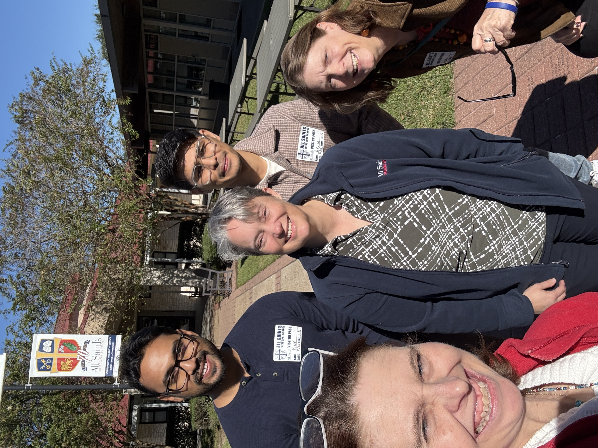
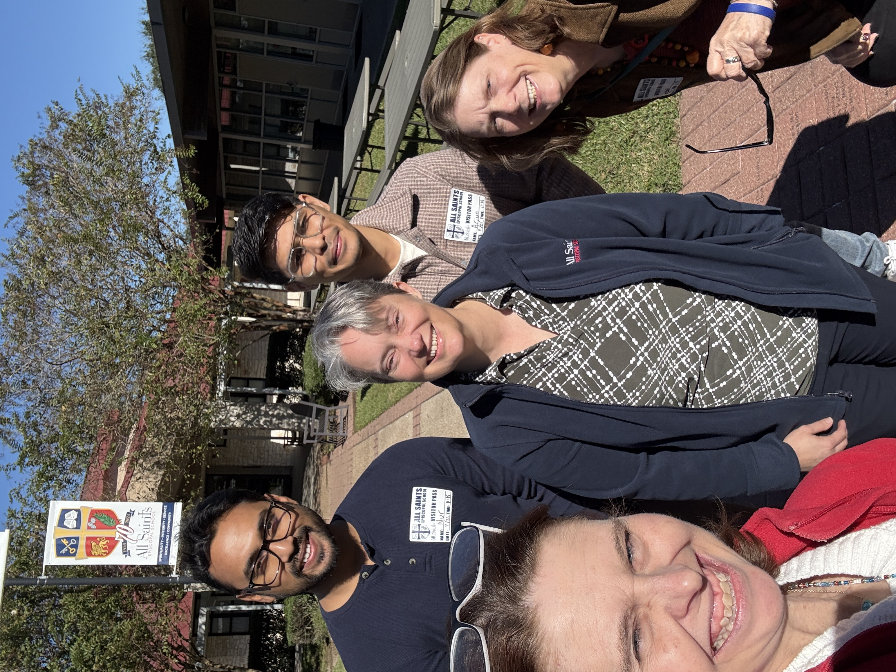
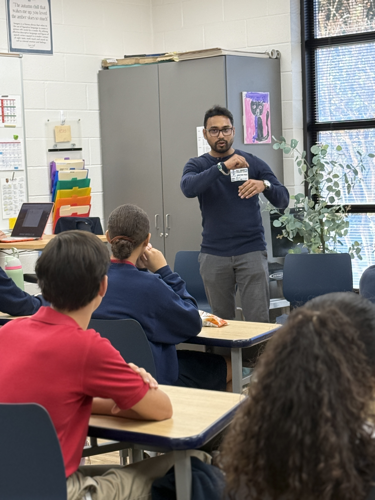

Date: November 21, 2025 | Author: Nur Mohammad Ali
 

I had the wonderful opportunity to visit All Saints Episcopal School in Beaumont, Texas, as a guest speaker. I was invited by Deacon Tracie Middleton, the school's Chaplain.
This was my first time stepping into an American school as a presenter. I felt honored and nervous. But I was welcomed warmly and respectfully by students and staff.

I shared stories, traditions, and answered students' questions. Their curiosity was inspiring and sincere.

Walking around campus, I was amazed by creative setups, garden space, and overall atmosphere. I jokingly wished I could be a student there too!
This visit reminded me how impactful cultural exchange can be for developing respectful, open-minded future leaders.